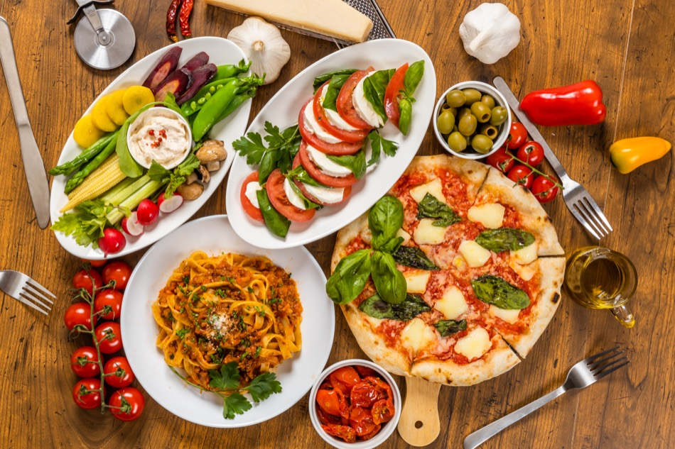

Authentic Italian Food
A Brief History of Italian Cuisine
While the ruling classes in Ancient Rome had feasts of roasted game, fish, wine, and exotic foods, peasants ate what we now call a Mediterranean diet: wine, bread, olive oil, cheese, and seasonal vegetables. After the fall of the Roman Empire, Italy’s regions created their own culinary identities that still exist today. Think of risotto in Milan, pizza in Naples, and seafood in Sardinia. Today, Italian restaurants, pizzerias, and trattorias featuring classic Italian fare can be found in almost every country.
12 Traditional Italian Ingredients
- Extra virgin olive oil
- Balsamic Vinegar
- Garlic
- Pasta
- Pasta Sauce
- Fresh Tomatoes
- Oregano
- Capers
- Porcini Mushrooms
- Basil
- Italian Cheese
- Red & white Wine